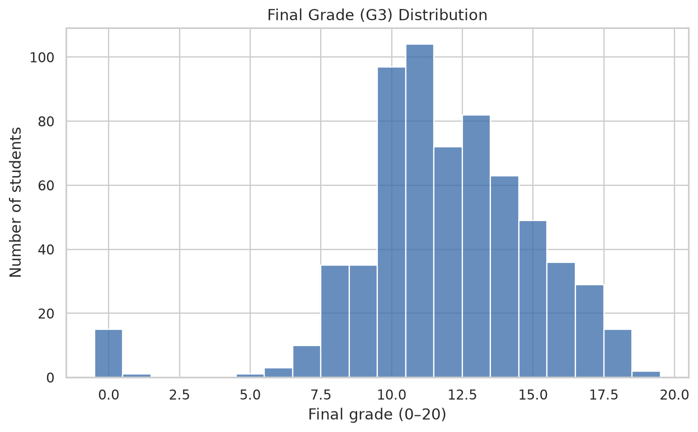
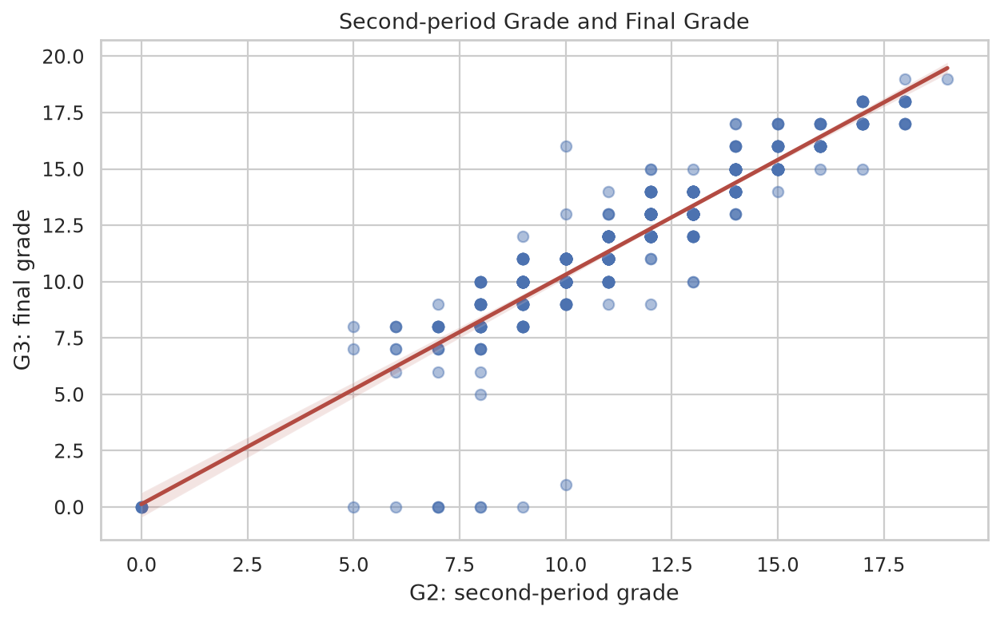
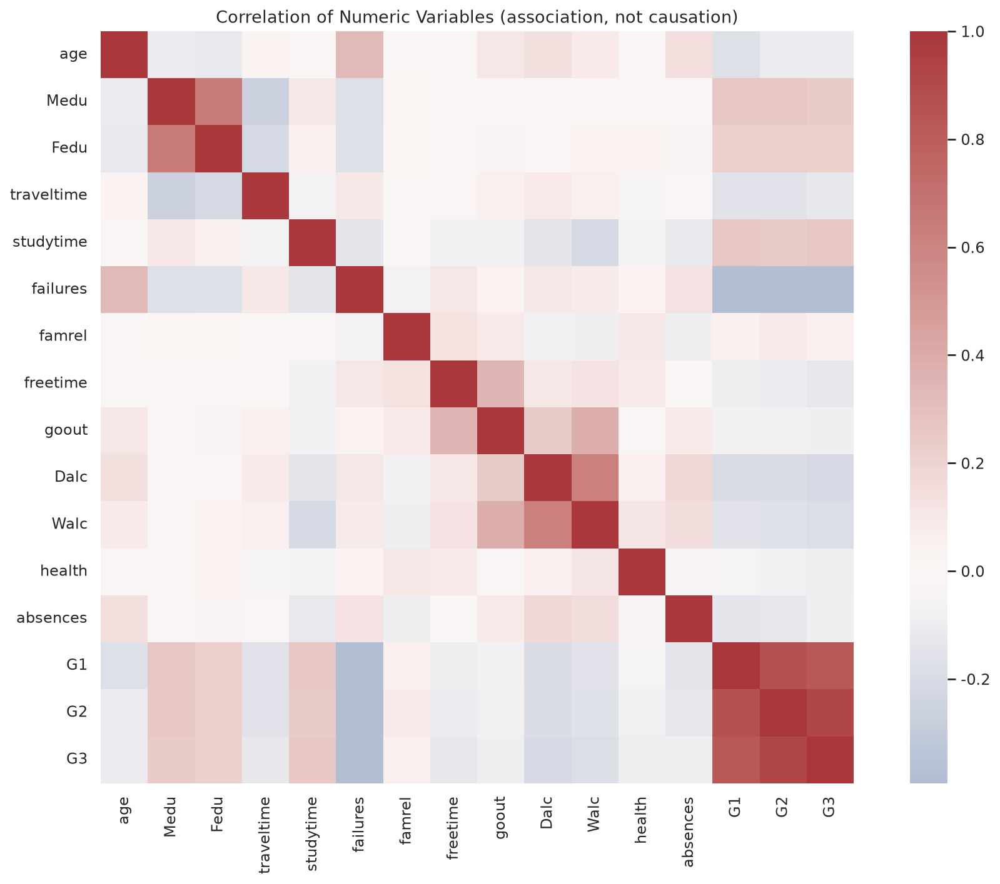
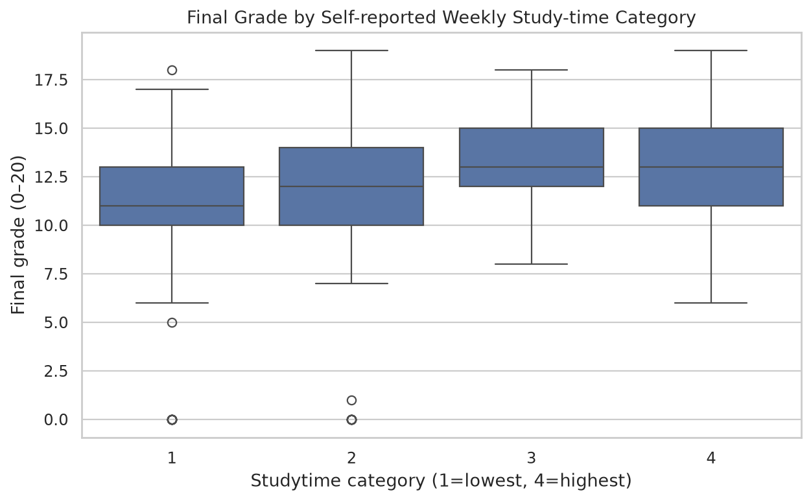
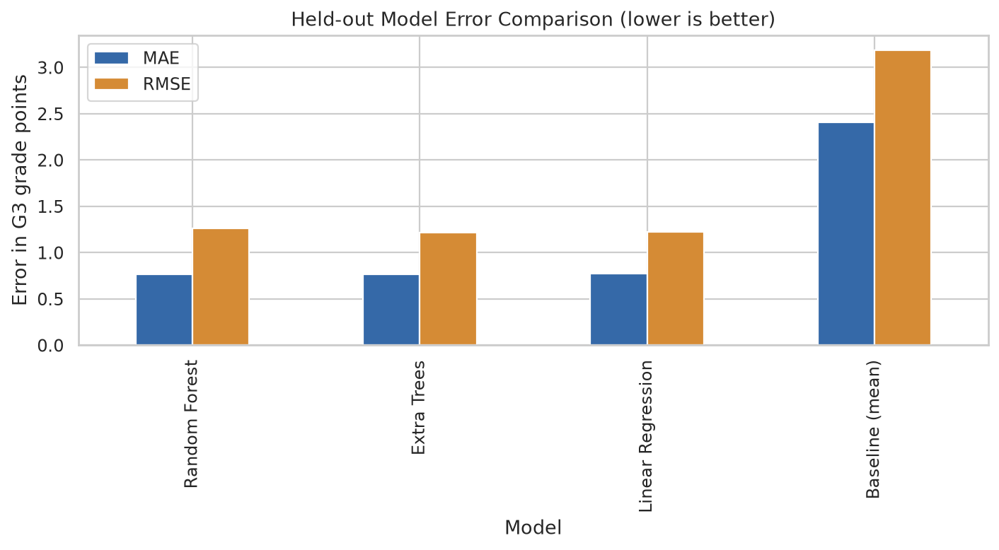
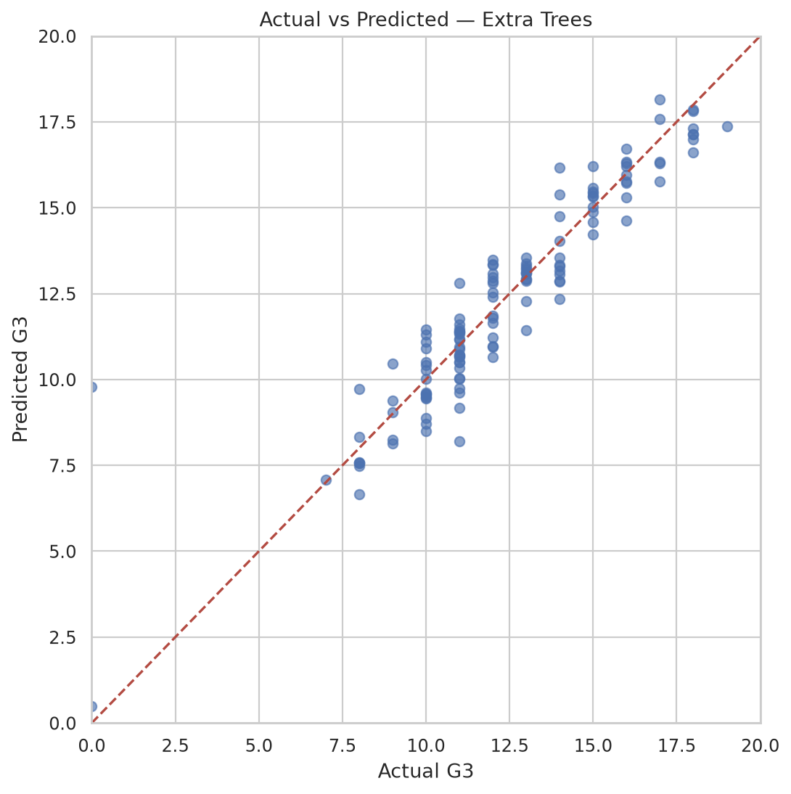
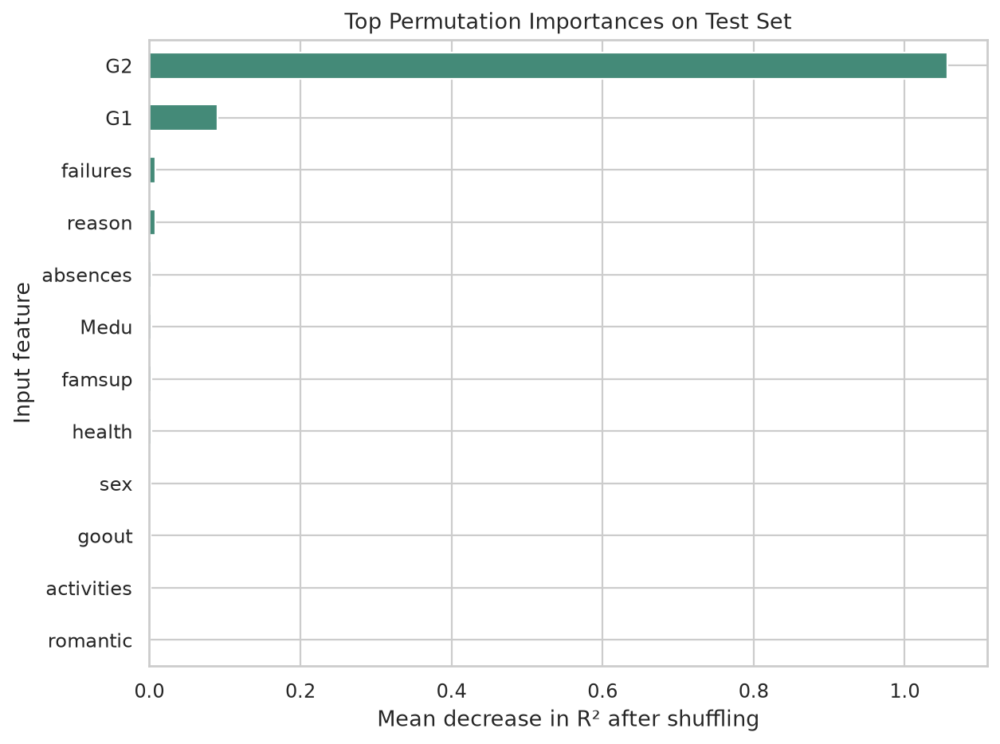

What is being predicted?
Target: G3, the final-period grade on a 0–20 scale. Prediction is made after G2 (second-period grade) is available. Earlier grades G1 and G2 are inputs; G3 is never a feature.
UCI's Portuguese-course file contains 649 records. The project compares a mean baseline, Linear Regression, Random Forest, and Extra Trees. Model selection uses a validation split; the separate test partition is kept for final reporting. The selected Extra Trees test scores shown above are measured from model predictions, not invented metrics.
60% train20% validation20% testrandom_state=42Results and exploration
All charts use source data or held-out predictions. Correlation and feature importance describe associations or model reliance—not causation.







Scope, limitations & responsible use
- The historical dataset describes students from two Portuguese secondary schools. Generalization elsewhere is not established.
- It contains no explicit attendance rate, assignment scores, internal marks, or engagement telemetry. Absences are a count; study time is self-reported.
- Grades and social background can be sensitive. This site presents aggregate evaluation only and does not publish row-level records or student identifiers.
- Predictions are uncertain estimates to support educators—not to determine student opportunities or outcomes automatically.
Source: Cortez, P. (2008), UCI Student Performance (CC BY 4.0).